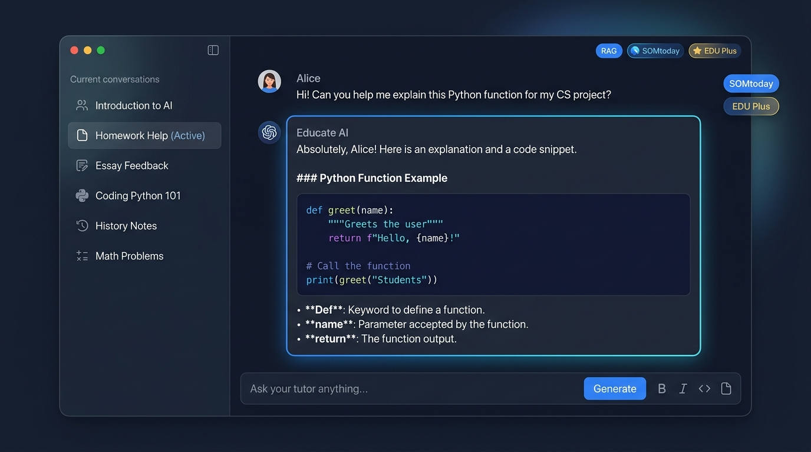

Locra is het enige AI-platform exclusief ontworpen voor het onderwijs. Geen kant-en-klare antwoorden voor huiswerk, maar echte Socratische begeleiding, de officiële Locra Academy voor AI-geletterdheid, directe SOMtoday-koppeling en onzichtbare watermerkdetectie tegen fraude.

AI verbieden werkt niet. Leerlingen écht leren hoe AI werkt wél. Locra Academy biedt een modulair curriculum (5 lessen van 45-60 min) met theorie, interactieve calculators, toetsquizzen en officiële digitale certificering.
Energie- en waterkoeling van datacenters. Leerlingen berekenen de CO₂-uitstoot en tokenkosten per prompt.
Benchmarks (GLUE, ImageNet), F1-scores, accuracy, precision en recall met onze interactieve simulator.
Regelmodellen, klassiek ML, CNNs en LLMs vergelijken. Cloud versus lokaal draaien met privacybehoud.
Waarom LLMs hallucineren en gokken. Praktische AI-vraagloop en bronverificatie via schoolboeken en Wikipedia.
Context, Lengte, Examples, Actief werkwoord en Rol. Inclusief Chain-of-Thought en de CLEAR Prompt Studio.
Ontlast docenten, bescherm de academische integriteit en geef leerlingen een didactische sparringpartner die hen aanzet tot zelfstandig nadenken.
Upload lesmethodes, readers, syllabi en toetsmatrijzen. Locra beantwoordt vragen van leerlingen uitsluitend op basis van jullie geautoriseerde leermiddelen.
Eigen lesstofDirecte en veilige synchronisatie met SOMtoday. Leerlingen en docenten kunnen direct hun rooster, huiswerk, deadlines en leerdoelen inzien via natuurlijke taal.
Direct gekoppeldBescherm de academische integriteit. Elke door Locra gegenereerde tekst bevat een onzichtbaar cryptografisch watermerk dat docenten direct kunnen scannen op fraude.
Anti-fraudeLocra functioneert als een geduldige privédocent. De assistent geeft geen directe antwoorden bij huiswerkvragen, maar stelt gerichte wedervragen volgens de Socratische methode.
Leren LerenHosting op gecertificeerde Europese servers. Geen persoonsgegevens die worden doorgezet naar openbare modeltrainingen van grote techbedrijven.
100% AVG-proofVolledig beheer over klassen, groepen, prompts en licenties. Schakel specifieke AI-functies in of uit per leerjaar of onderwijsniveau met één muisklik.
Volledige RegieGeen onvoorspelbare tokenprijzen. Vaste jaartarieven inclusief veilige cloud, updates en docentenondersteuning.
Alles wat je moet weten over didactiek, privacy, installatie en licenties.
Sluit je aan bij vooruitstrevende scholen in Nederland. Vraag vandaag nog een proeflicentie aan en ervaar het didactische verschil.